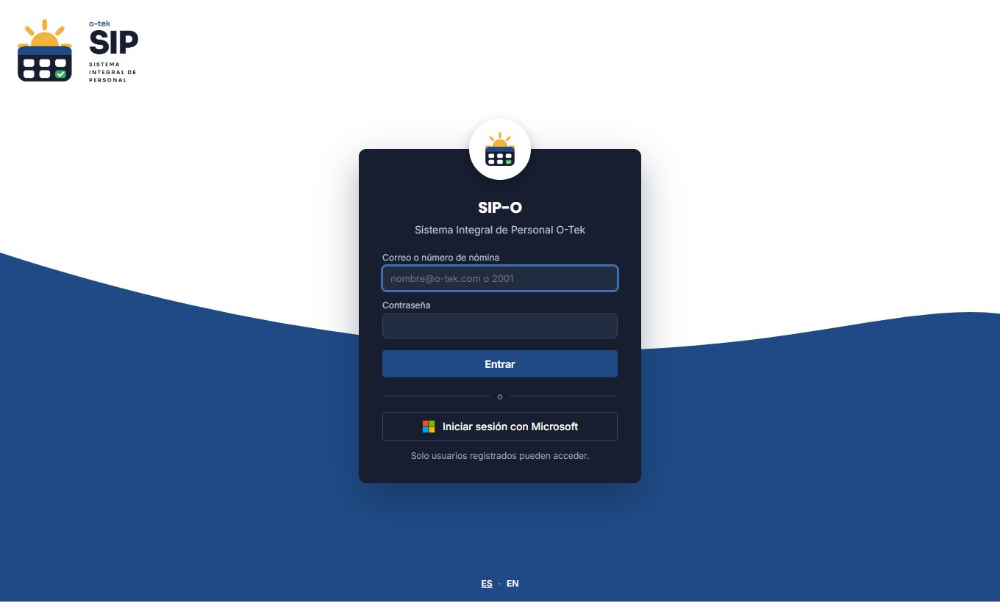
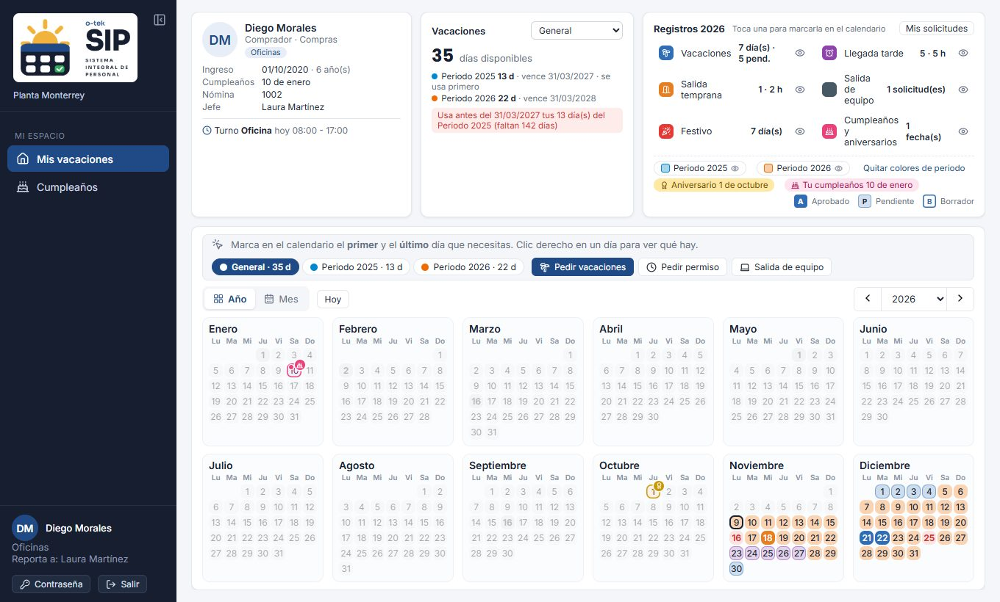
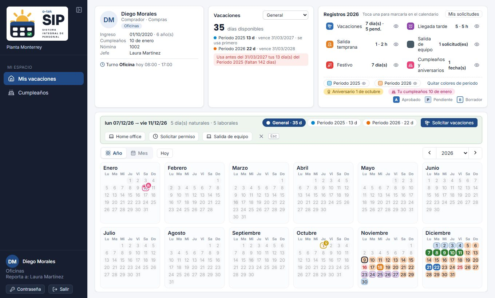
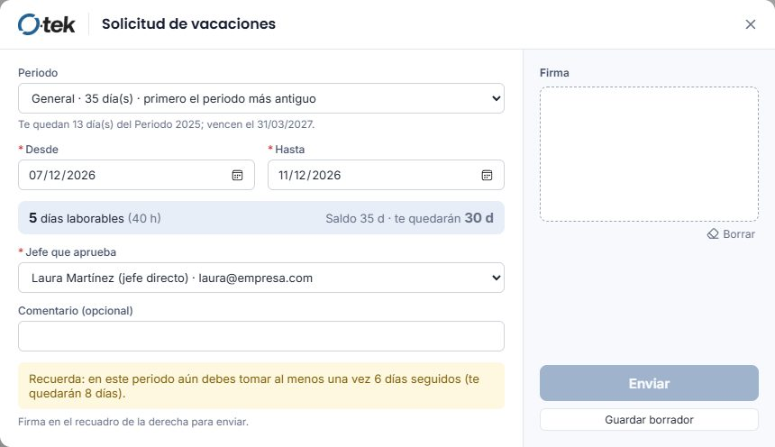
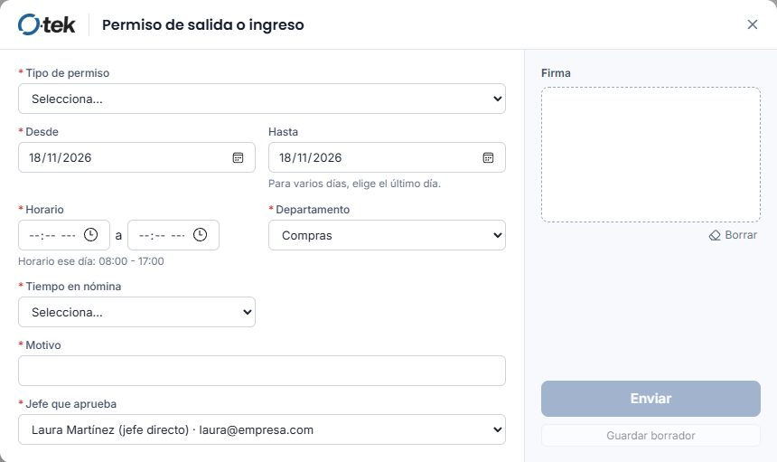
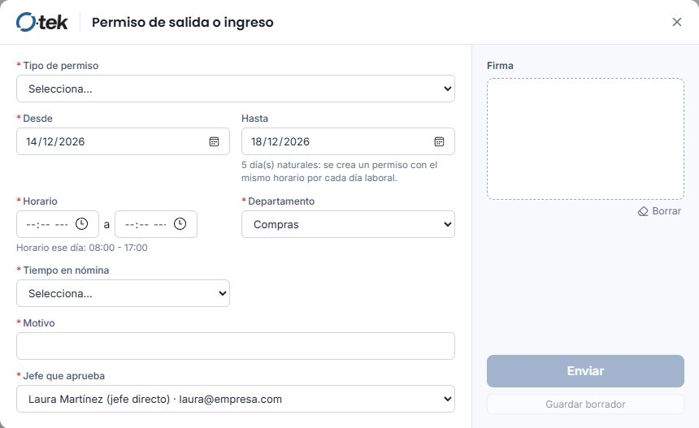
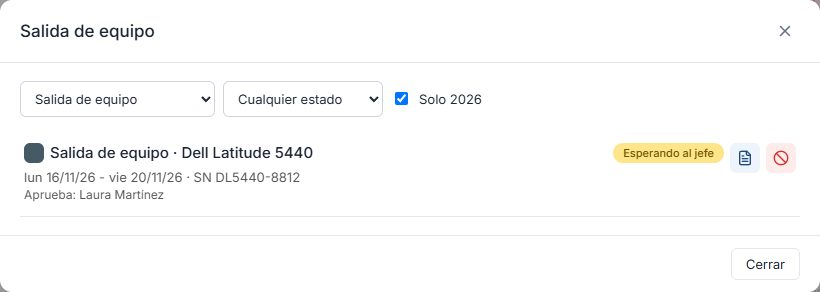
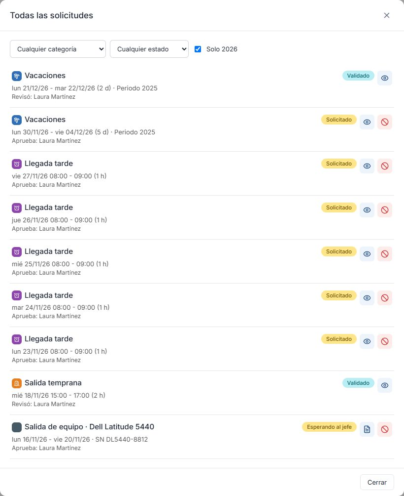
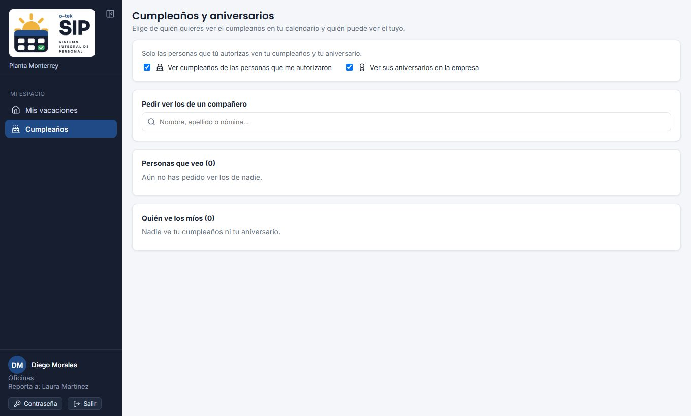

01Entrar a SIP-O
Abre https://sip-o.otek.internal desde la red de la empresa (o con la VPN conectada).

Con usuario y contraseña
- Escribe tu correo corporativo, tu correo personal o tu número de nómina.
- Escribe tu contraseña y pulsa Entrar.
Con tu cuenta de Microsoft
Si tienes correo de O-tek, usa Iniciar sesión con Microsoft: entras con la misma cuenta de Outlook y Teams, sin otra contraseña.
Primera vez o contraseña temporal
Si GH te dio una contraseña temporal de 6 dígitos, al entrar SIP-O te pide crear la tuya: al menos 8 caracteres, con letras y números, escrita igual dos veces.
Pide a Gestión Humana (GH) de tu sede una contraseña temporal. Después de 5 intentos fallidos la cuenta se bloquea 15 minutos.
02Tu pantalla
Al entrar ves Mis vacaciones. A la izquierda está el menú (en computadora puedes encogerlo); en el celular el menú va abajo y la pantalla se divide en las pestañas Resumen y Calendario.

- Tu tarjeta: foto, nombre, puesto, sede, fecha de ingreso, antigüedad y tu turno de esta semana.
- Resumen: días disponibles por periodo y cuándo vencen. Si tienes días por vencer, te avisa.
- Registros: vacaciones, home office, permisos, incapacidades, consultas médicas, festivos y cumpleaños del año, con cuántos hay de cada uno.
- Tu nombre (abajo del menú): abre Mi información.
03El calendario
Cada mes muestra tus días con el color de su tipo. El estilo indica el estado:

Cómo se usa
| Acción | Qué hace |
|---|---|
| Clic en un día y luego en otro | Selecciona el rango para pedir vacaciones, home office o un permiso. |
| Esc | Cancela la selección. |
| Clic derecho en un día | Muestra todo lo de ese día: festivos, cumpleaños de tu sede y el detalle de tus registros. |
| Un clic en un tipo del panel Registros | Marca esos días en el calendario. |
| El ojo junto a cada tipo del panel Registros | Abre la lista de esos registros para verlos, editarlos o cancelarlos. |
| Chips de periodo (arriba del calendario) | Pintan la franja de cada periodo de vacaciones; puedes ocultarlas. |
No puedes seleccionar fechas pasadas, más días de los que tienes disponibles ni fechas posteriores al vencimiento del periodo.
04Tu saldo de vacaciones
Tus días se organizan por periodo (por ejemplo Periodo 2026). Cada periodo vence: lo que no uses antes de esa fecha se pierde. En O-tek México son 18 meses.
- Días hábiles: solo se descuentan tus días de trabajo. No cuentan fines de semana, tus descansos del ciclo (por ejemplo 4×4 en planta) ni los festivos de tu sede.
- Modo General: si tienes días de dos periodos, SIP-O usa primero los del más antiguo para que no se te venzan.
- Bloque obligatorio: en cada periodo debes tomar al menos una vez varios días seguidos (por ejemplo 6 en oficinas o 4 en planta). Mientras no lo tomes, SIP-O no te deja pedir días sueltos que te impidan completarlo.
- Planta: según tu sede, el saldo se lleva en días de tu jornada o en horas. La tarjeta siempre muestra los días que te quedan.
05Pedir vacaciones
- En el calendario, haz clic en el primer día y luego en el último (o pulsa Pedir vacaciones arriba del calendario y escribe las fechas).
- En la barra que aparece, revisa los días y el saldo, y pulsa Solicitar vacaciones.
- En el formulario verás los días laborables, qué días no cuentan (festivos o descansos) y cuánto te quedará.
- Elige al jefe que aprueba. Por defecto es tu jefe directo; solo aparecen jefes de tu sede.
- Firma en el recuadro con el mouse, el dedo o un lápiz. Si te equivocas, pulsa Borrar.
- Pulsa Enviar. Si aún no estás seguro, usa Guardar borrador.

Vacaciones por horas
Si tu jornada lo permite (lo define GH), al elegir un solo día aparece Por horas. Escribe cuántas horas tomarás (hay un mínimo) y solo esas horas se descuentan.
Algunas sedes piden solicitar con anticipación. Si te falta, el formulario te dice a partir de qué fecha puedes pedirlas.
06Home office
- Selecciona los días en el calendario y pulsa Home office.
- Escribe las actividades que harás, elige al jefe y firma.
- Pulsa Enviar.
El home office no descuenta vacaciones. Tu sede define el máximo de días por solicitud.
07Permisos
Con un día seleccionado pulsa Solicitar permiso, o pulsa Pedir permiso arriba del calendario, y elige el tipo:

| Tipo | Cuándo usarlo | Horario |
|---|---|---|
| Llegada tarde | Entrarás después de tu hora de entrada. | Se prellena tu entrada; escribe a qué hora llegarás. |
| Salida temprana | Saldrás antes de tu hora de salida. | Se prellena tu salida; escribe a qué hora te irás. |
| Salida durante la jornada | Saldrás y regresarás el mismo día. | Escribe la hora de salida y la de regreso. |
El horario se toma de tu turno de ese día, incluidos horarios especiales como el Short Friday. Indica también cómo se considera el tiempo en nómina (con goce, sin goce o reposición de tiempo), el motivo, el jefe y tu firma.
El mismo permiso varios días
Si necesitas el mismo permiso por horas en varios días (por ejemplo, llegar tarde toda una semana), marca en el calendario el primer y el último día y pulsa Solicitar permiso. También puedes llenar Desde y Hasta en el formulario.

- Se crea un permiso con el mismo horario por cada día laboral del rango; no cuenta tus descansos ni los festivos.
- Tu jefe los aprueba o rechaza todos juntos, una sola vez (en SIP-O o en Teams).
- Si algún día no es válido (por ejemplo, una fecha pasada o rebasa el límite del tipo), no se crea ninguno y el aviso te dice qué fecha falló.
- Máximo 31 días naturales por solicitud.
Otros permisos de tu sede
Tu sede puede tener más tipos (por ejemplo Día de cumpleaños o Trámite personal) en la lista Tipo de permiso. Los que son por días se piden seleccionando el rango y pulsando Solicitar permiso; los que son por horas se piden por día o, para varios días, como se explica arriba.
Algunos permisos tienen un límite por mes, por año o en total. El formulario te muestra el límite, cuánto llevas y cuánto te queda. Cuentan tus borradores, pendientes y aprobados; si cancelas uno, se libera.
Cuando un permiso tuyo queda autorizado, caseta lo ve en su lista del día (y puede recibir un aviso por correo, si tu sede lo tiene activo).
08Salida de equipo de cómputo
Para sacar de planta una laptop o un equipo de escritorio llena el formato F-630-03 Entrada y salida de equipos de cómputo desde Mis vacaciones.

- Marca en el calendario el primer y el último día que el equipo estará fuera y pulsa Salida de equipo en la barra (o pulsa Salida de equipo arriba del calendario y escribe las fechas).
- Marca el tipo de equipo (laptop o de escritorio) y captura marca, modelo, SN / Service Tag y los accesorios que saldrán.
- Escribe la justificación, el plazo (fecha de inicio y de término) y, si hace falta, detalles del equipo (activo fijo, número de inventario).
- Elige a tu jefe directo, firma y pulsa Enviar. También puedes guardarla como borrador.
Tu jefe la autoriza en SIP-O. TI puede revisarla: sellarla o rechazarla antes de que el equipo salga. En caseta, el vigilante revisa que el equipo coincida y registra la salida y el regreso.
| Situación | Qué significa |
|---|---|
| Esperando al jefe | Enviada; tu jefe directo debe autorizarla. |
| Autorizada por el jefe | Ya puede salir dentro del plazo. TI todavía puede revisarla. |
| Autorizada por el jefe y TI | TI también la selló. |
| Rechazada por el jefe / por TI | No puede salir; verás el motivo. Si fue TI, también se avisa a tu jefe. |
| Fuera de planta | Caseta registró la salida del equipo. |
| Regresó a planta | Caseta registró el regreso. |
Tus solicitudes aparecen en el panel Registros → Salida de equipo y en Mis solicitudes. Con el ícono de documento ves el formato F-630-03 con los datos y las firmas, y puedes imprimirlo. Mientras el equipo no haya salido puedes Cancelar la solicitud.
09Seguimiento y estados
Abre tus solicitudes con Mis solicitudes en el panel Registros, o con el ojo junto a cada tipo. Puedes filtrar por categoría (vacaciones, permisos, consultas, incapacidades) y por estado.

| Estado | Qué significa | Qué puedes hacer |
|---|---|---|
| Borrador | Guardada, aún no enviada. Ya aparta tus días. | Editar, firmar y enviar, o eliminar. |
| Solicitado | Enviada; espera a tu jefe. | Cancelarla. |
| Aprobada por el jefe | Tu sede pide dos aprobaciones: el jefe ya aprobó, falta GH. | Esperar a GH. |
| Validado | Aprobada. Los días ya cuentan como tomados. | Para cancelarla, pídelo a tu jefe o a GH. |
| Rechazado | No fue aprobada; verás el motivo. | Hacer una nueva solicitud. |
| Cancelado | Se canceló; los días regresan a tu saldo. | — |
Tu jefe puede aprobar en SIP-O o desde Teams; si aprueba en Teams, SIP-O lo refleja en uno o dos minutos.
10Consultas médicas e incapacidades
Cuando el servicio médico te atiende, la consulta aparece en tu calendario y en tus registros. Tú ves el detalle completo (síntomas, diagnóstico, medicamentos e indicaciones); tu jefe solo ve que hubo una consulta y su horario.
Si te dan incapacidad
- Se registra en la consulta y se envía a tu jefe para que la valide; GH recibe un aviso.
- En tu calendario aparece tenue mientras está por validar y sólida al validarse.
- Tu jefe puede ajustar los días al validarla: verás las fechas autorizadas y también las que registró el médico.
- Si la rechaza, verás el motivo en el detalle de la consulta.
11Si llegas tarde a planta
Si llegas después de tu hora de entrada sin un permiso aprobado, caseta registra tu llegada y pide a tu jefe (o a GH, si tu jefe no está en planta) que autorice tu ingreso. Espera en caseta: tu jefe lo recibe en Teams y en SIP-O.
El registro queda en tus permisos como llegada tarde, con la hora en que llegaste. Si te lo niegan, verás el motivo.
Si sabes que llegarás tarde, pide el permiso de llegada tarde con anticipación: caseta lo verá autorizado y no tendrás que esperar.
12Cumpleaños y aniversarios
Tu cumpleaños y tu aniversario en la empresa solo los ven las personas a las que tú autorizas. Tú siempre ves los tuyos.

Ver los de un compañero
- Abre Cumpleaños en el menú.
- En Pedir ver los de un compañero, búscalo por nombre o nómina y pulsa Enviar solicitud.
- Cuando la acepte, su cumpleaños y su aniversario aparecen en tu calendario (y en el panel Registros → Cumpleaños y aniversarios).
Si alguien te pide ver los tuyos
- El menú Cumpleaños muestra un círculo rojo. Pulsa Aceptar o No aceptar.
- En Quién ve los míos puedes Quitar acceso en cualquier momento.
- En Personas que veo puedes Dejar de ver a alguien o volver a pedirlo si no aceptó.
Arriba de la página puedes apagar Ver cumpleaños o Ver aniversarios: dejan de mostrarse en tu calendario sin quitar las autorizaciones. Del cumpleaños solo se muestra el día y el mes, nunca el año ni la edad.
13Tu información y contraseña
- Pulsa tu nombre (abajo del menú) para abrir Mi información: datos laborales (nómina, sede, ingreso, jornada, turno, grupo, jefe), contacto (correos, teléfono, dirección y contacto de emergencia) y cumpleaños.
- Con Editar mis datos actualizas tu teléfono, correo personal, dirección, contacto de emergencia y fecha de nacimiento. Nombre, nómina, puesto y datos laborales los cambia GH.
- Desde ahí también puedes Cambiar contraseña (si entras con usuario y contraseña) o Salir.
A los 6 meses de tu registro, o de la última vez que cambiaste o confirmaste tus datos, al entrar aparece Confirma tus datos. Corrige lo que haya cambiado y pulsa Confirmar y continuar. Hasta hacerlo puedes consultar, pero no registrar nada. En Mi información ves la fecha de tu próxima confirmación.
14Preguntas frecuentes
No me deja seleccionar unos días.
Son fechas pasadas, posteriores al vencimiento del periodo o superan tus días disponibles. Revisa el saldo en el resumen.
¿Por qué me descuentan menos días de los que seleccioné?
Solo cuentan tus días laborales: fines de semana, descansos del ciclo y festivos de tu sede no se descuentan. El formulario te dice cuáles no cuentan.
Me sale que debo tomar días seguidos.
Es el bloque obligatorio del periodo. Pide ese bloque primero o una cantidad de días sueltos que todavía te permita completarlo.
¿Puedo editar una solicitud enviada?
No. Cancélala mientras esté en Solicitado y crea una nueva. Los borradores sí se editan.
No aparece mi jefe en la lista.
Solo aparecen jefes de tu sede. Pide a GH que revise tu jefe directo y tu sede.
En mis datos no aparece un jefe directo.
Si eres de planta y no tienes jefe directo, en tus datos verás a los jefes de tu área o grupo. Ellos aprueban tus solicitudes.
Me pide confirmar mis datos y no me deja registrar nada.
Es la confirmación de cada 6 meses: revisa tus datos y pulsa Confirmar y continuar.